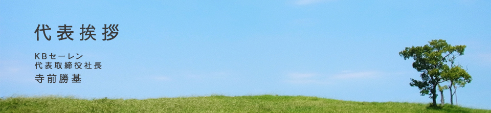

KBセーレンのホームページにアクセスいただきありがとうございます。
当社は総合繊維メーカーであるセーレングループの原糸生産部門を担っております。
日本国内の自社工場にてレギュラー糸はもちろん、細繊度繊維・複合繊維・機能性繊維を製造しております。さらには企画、織・編加工、染色加工、部材化・製品化まで、お客様のニーズに合わせて社内一貫生産体制でモノづくりを行っております。BtoB事業だけでなくBtoC事業に至るまで幅広く展開しております。
セーレングループの一員として自主性・責任感・使命感を持ち、お客様へ【提案する仕事】を心掛けていきます。従来の素材に関してはさらなる改善を行い価値を高める、また、未来に向けて新しいことにチャレンジし、新しい素材・商品・価値を生み出し、世の中のお役に立ちたいと強く願っております。
現在、我々がいる繊維業界は大変革期を迎えています。
これまでは繊維＝衣料というのが一般的でしたが、これからは様々な分野での活躍・用途が見込まれています。IoTという言葉に代表されるようにウェアラブル対応テキスタイル、医療用途、産業用エンプラ繊維とこれまでの枠を大きく超えた分野での対応が要求されます。
私の仕事のモットーは【行動を起こして成果につなげる】そのために「時間を早く」、「動きを速く」して目まぐるしく変化する市場に対応すべく質の高い仕事を目指していきます。
このホームページ上では当社の持つ機能性・差別化繊維とそこから生み出される生地・資材・商品をご紹介させて頂いております。当社素材が皆様方の生活を豊かにすることに貢献できれば幸いです。
KBセーレン 代表取締役社長 寺前勝基